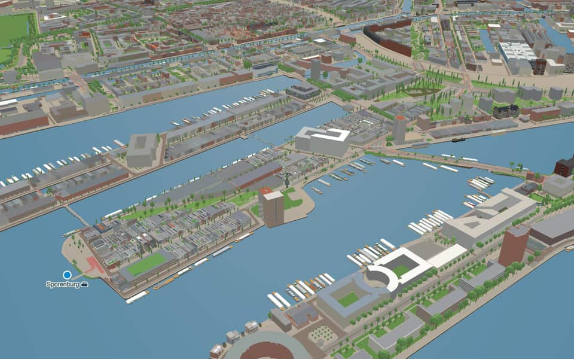
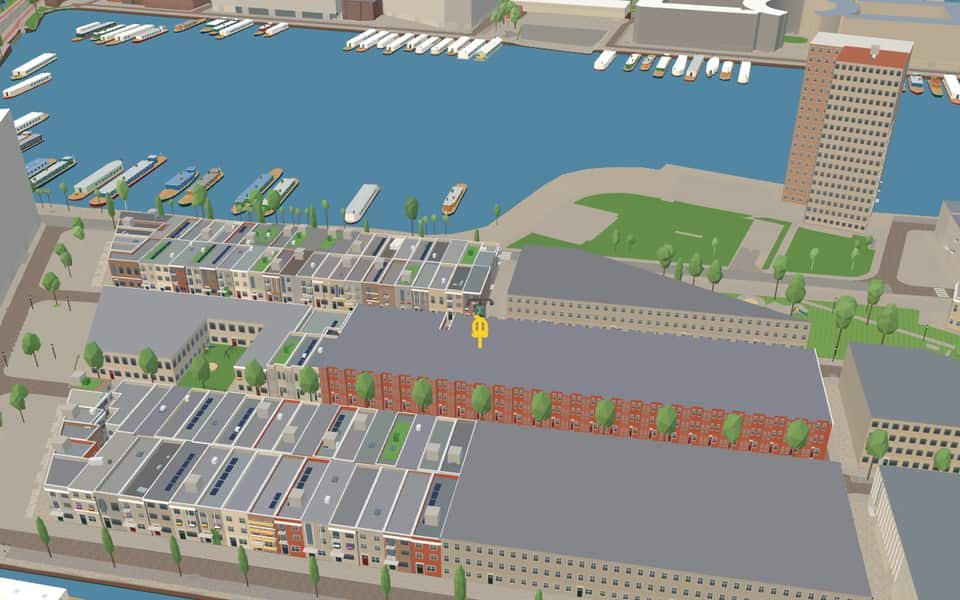

Neighbourhood in Oostelijk Havengebied
Sporenburg
Sporenburg is a long artificial peninsula, built out in the 19th century in the Eastern Docklands, running roughly east to west. nl.wikipedia.org
The name. Sporenburg owes its name to its use as a railway shunting yard. nl.wikipedia.org
Ride Sporenburg29 kit buildings · 20 facts · 20 name stories


In the game
Frames from a ride through Sporenburg.


6 more photos of Sporenburg

![Snake uploaded 2026-05-25.jpg (Rob Oo [OFF], CC BY 4.0)](https://commons.wikimedia.org/wiki/File%3ASnake_uploaded_2026-05-25.jpg){kind=link}

.jpg){kind=link}


.jpg){kind=link}

.jpg){kind=link}

.jpg){kind=link}
Built here
Buildings modelled one by one for the ride.
Drawn from the building kit
29 buildings here use one of the game's reusable post-war building designs, fitted to their real footprint. See every design.
- A recessed garage behind concrete columns with a folding gate, a cantilevered pink-grey brick storey with three tall timber windows each behind a small steel balcony cage 21
- A tall gated entrance between concrete piers under a concrete lintel and a grille fanlight, a tall pink-grey brick front with one recessed French window behind a railing 8
Did you know
Trivia the ride can show you here.
- Adriaan Geuze and West 8's Borneo-Sporenburg waterfront housing won Harvard's Veronica Rudge Green Prize in 2002. Wikipedia
- Since early 2023 a temporary ferry has run from the Tegelbergplein, at the tip of Sporenburg, to the Sluisbuurt. Wikipedia
- Since the 1990s it has been redeveloped as housing to an urban plan by West 8. Wikipedia
- Amsterdam-RijnkanaalA young engineer named Anton Mussert drafted the final plan before becoming notorious. en.wikipedia.org
- Amsterdam-RijnkanaalWorld War II delayed the project until Queen Juliana officially opened it in May 1952. en.wikipedia.org
- Amsterdam-RijnkanaalThe canal stretches 72 km, spans over 100 meters wide, and reaches a depth of 6 meters. en.wikipedia.org
- Amsterdam-RijnkanaalIn 2016 alone, 91,495 vessels navigated its waters carrying over 77 million tons of cargo. en.wikipedia.org
- EntrepothavenThe harbor was excavated directly into a swamp area known as the City Reedlands. nl.wikipedia.org
- EntrepothavenSecurity relied on a wall along Cruquiusweg, railway gates, and a barrier of wooden stakes in the water. nl.wikipedia.org
- EntrepothavenEntrepothaven connects to the Nieuwe Vaart via a sluice gate crossed by Bridge 352. nl.wikipedia.org
- EntrepothavenConstruction of this eastern port took place between 1898 and 1900. nl.wikipedia.org
- ErtshavenThe name Ertshaven reflects the heavy silt overflow that once characterized this water. nl.wikipedia.org
- ErtshavenThe Blauwehoofdbrug spans the port while it discharges into the Amsterdam-Rhine Canal. nl.wikipedia.org
- IJThe largest part of the IJ was reclaimed between 1865 and 1876 to create new polders. en.wikipedia.org
6 more facts
- IJThe Buiten-IJ hosted mixed dinghy sailing events during the 1928 Summer Olympics in Amsterdam. en.wikipedia.org
- IJOranjesluizen locks divide the waterway into an inner section and an outer extension. en.wikipedia.org
- IJThe western part connects directly to the North Sea Canal while the eastern side extends the IJmeer. en.wikipedia.org
- SpoorwegbassinThe eastern Python Bridge rises about 10 meters high to let pleasure boats pass beneath it. nl.wikipedia.org
- SpoorwegbassinSince the early 1990s, this historic port area has transformed into a neighborhood of houses. nl.wikipedia.org
- SpoorwegbassinA tunnel connecting Amsterdam to IJburg runs directly underneath the Spoorwegbassin waterway. nl.wikipedia.org
Names on the map
Where the canal, bridge and street names come from.
Canals and water
- Amsterdam-RijnkanaalBusy canal, 72 kilometres long, that links the IJ via Utrecht to the Waal near Tiel. It is part of an important route to the Ruhr area.
- EntrepothavenNamed after its function. The dock was built in 1827; imported goods had to be stored here until the import duties were paid (a bonded warehouse, entrepot). The warehouses have lost their function as an entrepot. In part of them the upper floors have now been converted into homes (Binnenkadijk).
- ErtshavenOre boats used to be unloaded at this quay.
- SpoorwegbassinThe Spoorwegbassin (railway basin) is a harbour; a bassin is a harbour basin.
1 other canal without a recorded story
IJ
Bridges
- Python BridgeBridge 1998: a steel bridge for pedestrians, dated 2000 in the city's bridge register.
Streets
- Baron G.A. TindalpleinGeorge August Tindal (1839-1921), director and board member of several Amsterdam steamship companies, including the N.V. Stoomvaart Maatschappij 'Nederland'. From 1872 to 1874 he was an alderman of Amsterdam, and he later became chamberlain to William III.
- Baron G.A. TindalstraatGeorge August Tindal (1839-1921), director and board member of several Amsterdam steamship companies, including the N.V. Stoomvaart Maatschappij 'Nederland'. From 1872 to 1874 he was an alderman of Amsterdam, and he later became chamberlain to William III.
- BufferstraatA disc on a steel spring between two railway carriages that absorbs the shock when they bump together.
- C. van EesterenlaanCornelis van Eesteren (1897-1988), architect and town planner. From 1929 to 1959 he headed the Urban Development department of Amsterdam's Public Works service. He designed the General Extension Plan of Amsterdam and played a leading part in planning the post-war districts of Slotermeer, Slotervaart, Osdorp and the Bijlmermeer.
- C.J.K. van AalststraatCornelis Johannes Karel van Aalst (1866-1939), banker. President of the Nederlandsche Handel-Maatschappij and later director of the Nederlandsche Overzee Trust Maatschappij. One of the initiators of the Koninklijke Hollandsche Lloyd and the Nederlandsche Scheepvaart Unie.
- D.L. HudigstraatDirk Louis Jacobszoon Hudig (1876-1973), director of the Koninklijke Nederlandse Stoomboot Maatschappij (Royal Dutch Steamship Company) from 1917 to 1947, which gave him a leading position in Dutch and international shipping. He held countless other posts, among them chairman of the supervisory board of N.V. Nederlandse Telegraaf Maatschappij.
- ErtskadeOre boats used to be unloaded at this quay.
- J.F. van HengelstraatJohannes Frederik van Hengel (1887-1975), director of the N.V. Stoomvaart Maatschappij 'Nederland' from 1919 to 1946. He held countless other posts, among them board member of the Amsterdam Port Authority and of the Maritime Museum in Amsterdam.
- LampenistenstraatA trade name: someone responsible for lighting and maintaining lamps (a lamplighter), for example on board a ship or at a station.
- P.E. TegelbergpleinPetrus Emelius Tegelberg (1838-1917), appointed co-director of the Stoomvaart Maatschappij 'Nederland' in 1873, board member of the Amsterdamsche Droogdok Maatschappij and treasurer of the Amsterdam Chamber of Commerce.
- PanamakadeAfter the Panama Canal, dug between 1900 and 1914 through the Isthmus of Panama (Central America).
- RangeerderstraatA railway worker responsible for coupling and uncoupling wagons and moving trains onto the various tracks (a shunter).
4 more streets with a story
- SeinwachterstraatA railway official who works the signals from a signal box beside the line (signalman).
- TenderstraatThe wagon behind a steam locomotive that carries coal and water.
- VerbindingsdamA dam in the Ertshaven.
- WisselstraatThe switch (points) between two railway tracks, worked by a lever, that lets trains pass from one track to another.
1 other street without a recorded story
Scheepsjongenplein